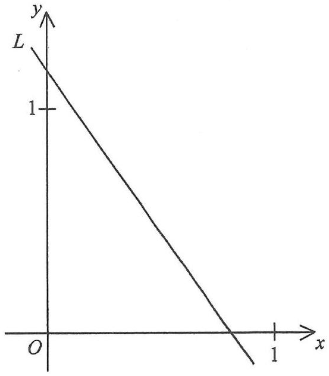

Question MC · 4 marks
In the figure, the equation of the straight line \(L\) is
\[ px+qy=7 \]Which of the following is/are true?
- \(p>7\)
- \(q>7\)
- \(q>p\)
In the given figure, \(L\) cuts the positive \(y\)-axis at a point above \(1\), and cuts the positive \(x\)-axis at a point between \(0\) and \(1\).
Original Figure

Part 1 — Rearrange \(L\) and read off slope & intercepts Setup
Make \(y\) the subject of \(px+qy=7\):
\[ qy = -px+7 \quad\Longrightarrow\quad y = -\frac{p}{q}\,x+\frac{7}{q} \]Put \(y=0\) to find the \(x\)-intercept of \(L\):
\[ px = 7 \quad\Longrightarrow\quad x = \frac{7}{p} \]Part 2 — Examine statement I: \(p>7\) Option A
From the figure, the \(x\)-intercept of \(L\) lies strictly between \(0\) and \(1\):
\[ 0 < \frac{7}{p} < 1 \]Multiply through by \(p>0\):
\[ 0 < 7 < p \quad\Longrightarrow\quad p>7 \]Part 3 — Examine statements II & III: \(q>7\) and \(q>p\) Options B, C, D
From the figure, the \(y\)-intercept of \(L\) is greater than \(1\):
\[ \frac{7}{q} > 1 \]Since \(q>0\) (from the positive intercepts), multiply by \(q\):
\[ 7 > q \quad\Longrightarrow\quad q < 7 \]Combine the two results: \(q<7\) and \(7
Summary of Answers
- \(L:\; y=-\dfrac{p}{q}x+\dfrac{7}{q}\) ⇒ slope \(=-\dfrac{p}{q}\), \(y\)-intercept \(=\dfrac{7}{q}\)
- \(x\)-intercept of \(L\) is \(\dfrac{7}{p}\)
- From \(0<\dfrac{7}{p}<1\): \(p>7\) — Statement I is TRUE
- From \(\dfrac{7}{q}>1\): \(q<7\) — Statement II (\(q>7\)) is FALSE
- Since \(q<7
- Only statement I is true